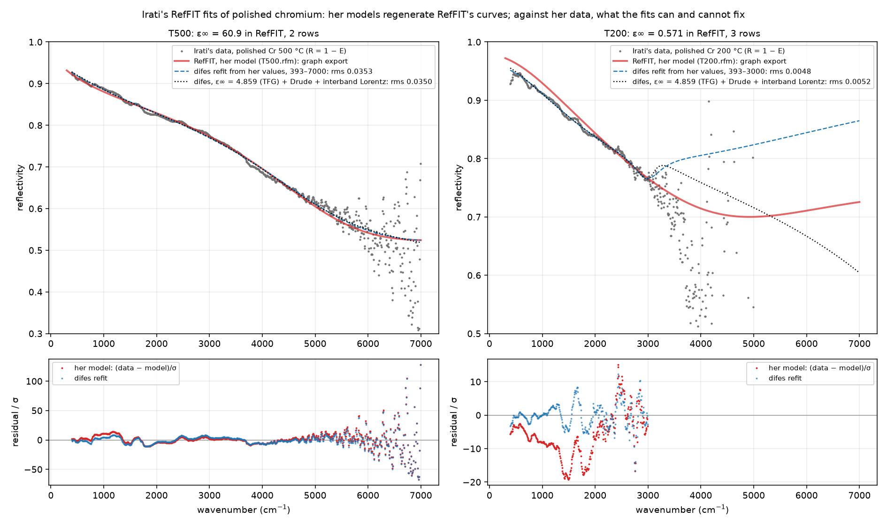

RefFIT, Alexey Kuzmenko’s fitting program, as a second reference next to FOCUS: its model table read and written, its quantities, its variational dielectric function, and a protocol that brings its curves back for comparison.
RefFIT is the other program the group uses: Windows, free, a Drude–Lorentz table with special line shapes, a variational dielectric function, multilayers and ellipsometry, fitted by Levenberg–Marquardt with confidence limits. difes does not run it or copy it. It reads what RefFIT writes, writes what RefFIT reads, implements its methods where difes lacked them, and gives a RefFIT user a macro that produces the curves difes is compared with. The module is difes.reffit; the method is difes.vdf.
RefFIT’s “Dielectric function” model is a field Einf and a table of rows (Wo, Wp, G). An ordinary row is a Lorentz oscillator \omega_p^2/(\omega_0^2 - \omega^2 - i\gamma\omega), a Drude term when Wo is 0, in \mathrm{cm}^{-1} and with the same sign convention as difes, so the table maps term by term:
from difes import reffit
m = reffit.model_from_table(4.993, [(0, 1356.4, 3872.6), (238.68, 1074.2, 8.6534)]) # the manual's Fig. 4-5
einf, rows = reffit.table_from_model(m) # and backA row whose Wo is a negative integer is a code for a special function (the manual’s Table 4-3), its parameters in the Wp and G columns of that row and sometimes of the next. difes handles −9 (Drude with signed weight), −10 (constant), −25/−26 and the like (Lorentz with signed weight), −27/−28 (difference of two Lorentzians), −55/−56 (Tauc–Lorentz), −65/−66 (Fano-shaped Lorentz) and −1000/−1001/−1002 (the factorised TO–LO formula, which becomes difes’s four-parameter modes). A code it does not handle, such as the cuprate formulas, the gapped Drude or the electron–boson model, raises an error naming the code, as the OSML reader does for FOCUS profiles.
RefFIT’s model file (RFM) is binary and the manual calls it inaccessible to other programs; the files Irati sent on 5 October 2026 (RefFIT 1.3.05) showed a regular layout, and reffit.read_rfm() reads it: one 232-byte record for \varepsilon_\infty, an integer with the number of rows, three records per row (Wo, Wp, G) and a short trailer; in each record the value is a double at the start, the active in fit flag an integer at byte 16, the lower and upper limits doubles at bytes 24 and 32, and the parameter’s name a string at byte 40 (“Epsilon at infinity”, “TO frequency”, “Plasma frequency”, “Linewidth”). The model files of RefFIT’s own TUTORIAL folder, saved in 2004, use 218-byte records with the name at byte 36 and the flag elsewhere; the reader tells the two layouts apart from the file itself (the position of the first name, the spacing of the next) and checks the names, refusing anything else. Two more facts of RefFIT’s loader learnt from the tutorial’s numbers: a dataset without an error column gets 0.01 on every point, and XGrid = 2 in LoadDataset is a logarithmic grid. RefFIT also writes, on every save, a text listing (ASC: ChiSq, then Einf, Wo[i], Wp[i], G [i] as value ± error, read by reffit.read_asc()) and a line of PAR.DAT, “name chi-square Einf Wo₁ err Wp₁ err G₁ err …” with each value followed by its error bar and one last number the manual does not name; reffit.read_par_dat() reads both that layout and the manual’s plain one. On the command line, difes reffit model --file T500.rfm --json T500.json prints a saved model with its active flags and writes it as a difes model, and difes reffit par --file PAR.DAT --json out/ does the same for every line of the history.
reffit.quantity_reffit(abbrev, eps, w) computes RefFIT’s output abbreviations from \varepsilon: R, Rph, E1, E2, S1 and S2 (conductivity in \Omega^{-1}\mathrm{cm}^{-1}, \omega\varepsilon''/60), N1, N2, PD, LF, AC. reffit.extended_drude(eps, w, wp, eps_inf) gives the outputs of RefFIT’s model “Extended Drude”: the frequency-dependent scattering rate 1/\tau(\omega) = -(\omega_p^2/\omega)\,\mathrm{Im}[1/(\varepsilon - \varepsilon_\infty)] and the mass ratio m^*/m = -(\omega_p^2/\omega^2)\,\mathrm{Re}[1/(\varepsilon - \varepsilon_\infty)]; for a pure Drude term they are \gamma and 1 at every frequency, which is the test.
RefFIT’s model-independent \varepsilon from reflectivity, or from any quantity, is in difes as a term and a recipe (the theory page has the construction):
from difes import vdf_fit
res = vdf_fit(spectrum, base_model) # base_model frozen, the variational function added and fitted
res.epsilon, res.omega # eps on the anchor mesh; res.fit is the FitResult
vdf_fit([e1_spectrum, e2_spectrum], None, kk=False) # the unconstrained form on two quantitiesUse every=2 for a sparser mesh when the result oscillates, nonnegative=True for a fit without a base model.
What makes RefFIT a reference is its own output on a case difes can compute too. The protocol writes everything a RefFIT user needs:
difes reffit protocol --data R.txt --quantity R --model model.json --out reffit_protocolThe folder holds DATA.DAT (three columns X, Y, Yerr) and difes.RFS, a macro in RefFIT’s macro language that loads the dataset, sets the model row by row with SetModelParam, exports R, E1 and E2 as text with ExportModelCurve, and saves the model. The RefFIT user runs REFFIT.EXE difes.RFS in that folder and sends back the exported difes_*.DAT, the ASC listing and PAR.DAT. reffit.read_export() reads the curves; the comparison with difes’s evaluation of the same table on the same grid is then number against number, as with FOCUS’s exports. Both points that were to be confirmed on a RefFIT machine were settled by Irati’s run of 5 October 2026: SetModelParam does create the rows (the PAR.DAT history shows the model grow row by row), and RefFIT’s exported R, \varepsilon' and \varepsilon'' of the Table 4 chromium model agree with difes’s to the six digits it exports (ledger T34). The --rfm variant, which loads a model saved in RefFIT instead of building one, stays available.
The first RefFIT projects of the group arrived on 5 October 2026: Irati’s fits of polished chromium at 500 °C and 200 °C, each with the saved model, its listing, the PAR.DAT history, a screenshot and graph.dat, RefFIT’s export of R, \varepsilon' and \varepsilon'' from its graph. Her models, read from the RFM, regenerate those curves to 8 \times 10^{-7} in R; against her data, her 500 °C model is a minimum difes reproduces to the same residual, with every parameter correlated above 0.999 with every other, and an \varepsilon_\infty of 61 that the data cannot tell from 4.86 plus an oscillator above the range; her 200 °C model is not the minimum of the file it came with. Ledger T43 holds the numbers; the example is examples/reffit/irati_reffit.py.

On 6 October Irati also sent the TUTORIAL folder of a RefFIT installation, which turned the manual’s worked examples from screenshots into RefFIT’s own data and saved models. Part 1 (La₁.₈₅Sr₀.₁₅CuO₄): from RefFIT’s starting model difes’s fitter lands on RefFIT’s saved fits with the same \chi^2 to 7 \times 10^{-9} and every parameter within 0.005 of its own standard uncertainty (T42). Part 2 (CeIrIn₅, reflectivity, ellipsometry and a dc point fitted together): RefFIT’s weighted \chi^2 comes back to the printed digit and the two-row fit to the printed model (T46). Part 4 (CuO at eleven temperatures): the macro’s loop in difes gives the figure RefFIT’s author drew to 0.3\ \mathrm{cm^{-1}} (T47). The scripts are examples/papers/reffit_tutorial/tutorial_part1_data.py, tutorial_part2_simultaneous.py and tutorial_part4_cuo.py.
RefFIT’s multilayer and ellipsometry models, its magneto-optics, and the special functions named above. Its plate model with partial coherence (code −13) is in difes since 0.27.0 as optics.plate_partial_coherence and reffit.plate (theory on the optics page, ledger T45). The ones the group needs will be added when a RefFIT project asks for them.